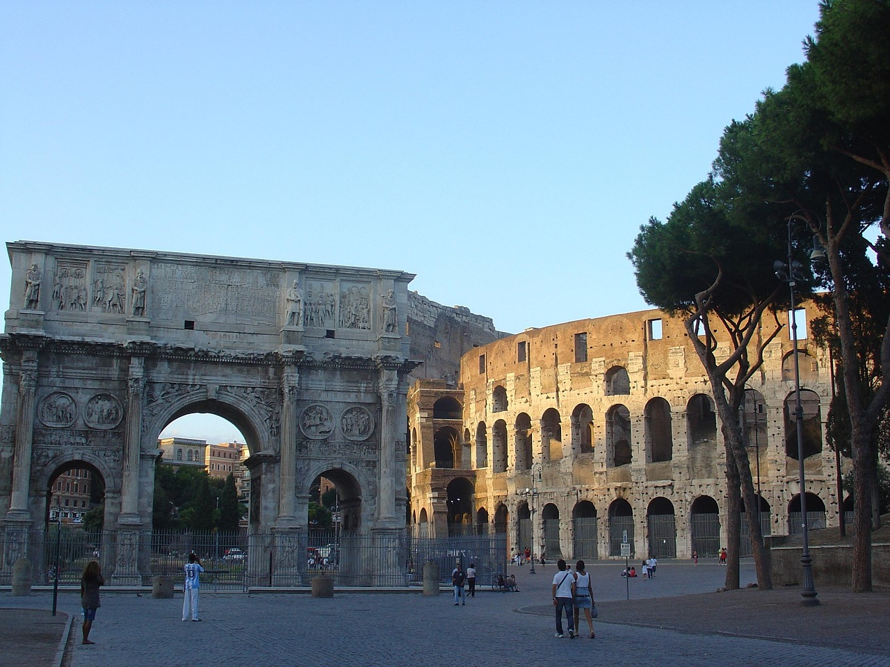

L'Arco di Costantino è un arco trionfale a tre fornici (un passaggio centrale affiancato da due passaggi laterali più piccoli) ed è situato a Roma, a breve distanza dal Colosseo. L'arco fu inaugurato nel 315 d.C. in occasione dei decennalia dell'imperatore Costantino. Fu dedicato dal Senato per commemorare la vittoria di Costantino contro Massenzio nella battaglia di Ponte Milvio del 312 d.C. L'arco è decorato con varie sculture raffiguranti divinità, rilievi trionfali e scene di caccia. Alcuni elementi decorativi provengono anche da monumenti realizzati durante il regno di imperatori precedenti.
